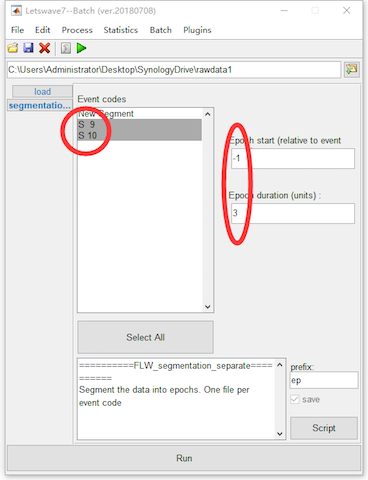
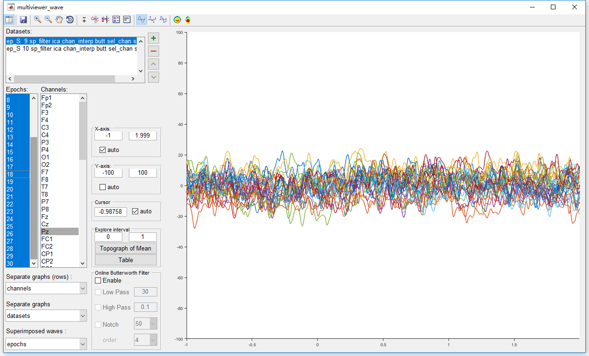
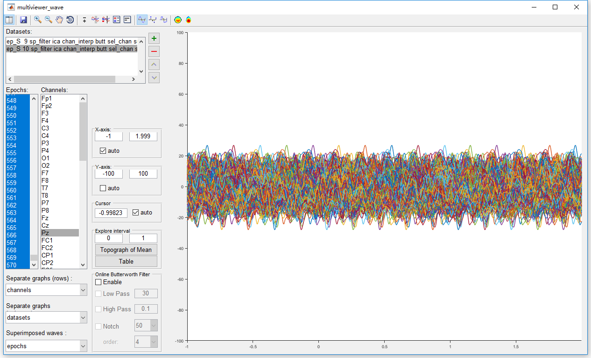
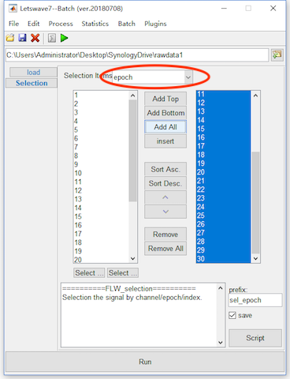
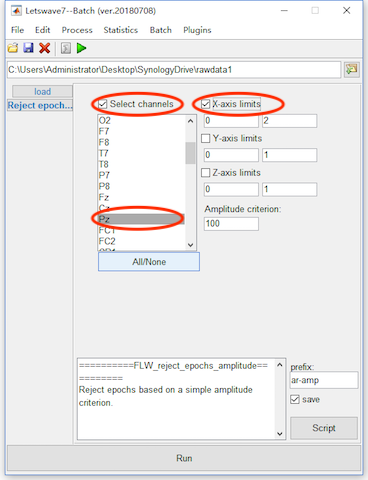
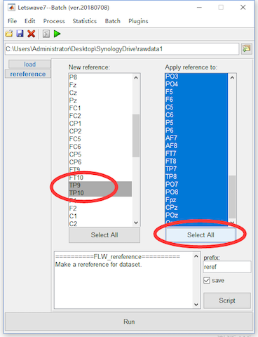
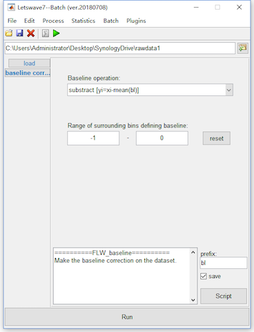
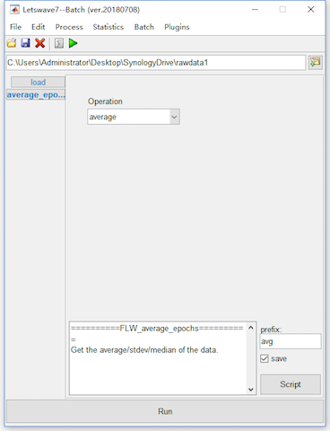

In this chapter, we keep on the preprocessing on the P300 dataset after ICA filtering.
Step 7. Segmentation/Epoching
Select the dataset “sp_filter ica chan_interp butt sel_chan sub093”” in the data list of the manager module, and click Process->Epoch segmentation->Segment relative to events (one file per event code) in the menu. In the batch module, select Event codes S 9 and S 10, and set the epcoh starting time and duration as -1 and 3. Click the button Run in the bottom of batch module, and then two new datasets with the name “ep_S 9 sp_filter ica chan_interp butt sel_chan sub093” and “ep_S 10 sp_filter ica chan_interp butt sel_chan sub093” will be appeared in the data list of the manager module.

In the menu, there are two items for segmentation, which are Segment relative to events and Segment relative to events (one file per event code). They have similar function, but the output would be different. If multiple event codes has been selected, Segment relative to events will segment all the epoches with different event codes into one dataset. However, with Segment relative to events (one file per event code), separated dataset will be generated according to different event codes. For example, in this case of P300 dataset, the target and nontarget events are marked as S 9 and S 10. Hence with Segment relative to events (one file per event code), two dataset has been generated.
Step 8. Artifact Rejection
Before the artifact rejection, it is necessary to have an observation to all the epoches. Select the datasets “ep_S 9 sp_filter ica chan_interp butt sel_chan sub093” and “ep_S 10 sp_filter ica chan_interp butt sel_chan sub093” and select view in the right-click menu. In the multiviewer of the waveform, setting epoches as the superimposed waves, and select all epoches. We select channel Pz for observation since it is the most interesting channel in the P300 analysis. Of cource, we should also have a look at the conditions on the other channels. By setting the y-axis from -100 to 100, all epoches seem fine on channel Pz. No obviously artifact has been observed for both the two datasets.


Hence, it is not necessary to perform arfifact rejection on this dataset. We will omit this step in the preprocessing of this P300 dataset. Considering the integrity of this manuel, we still show the operation of artifact rejection. In Letswave7, we provide two methods for artifact rejection.
Fisrtly, we can manually reject the epoches with artifact. For this methods, select the datasets “ep_S 9 sp_filter ica chan_interp butt sel_chan sub093” and “ep_S 10 sp_filter ica chan_interp butt sel_chan sub093”, and click Edit->Arrange signals->Rearrange or delete epochs, channels, indexes in the menu. In the batch module, set the selection items as “Epoch”, and put the epoches you want to keep into the right column. Click the button Run in the bottom of batch module to finish the work of artifact rejection. Two new datasets with the name “sel_epoch ep_S 9 sp_filter ica chan_interp butt sel_chan sub093” and “sel_epoch ep_S 10 sp_filter ica chan_interp butt sel_chan sub093” will be appeared in the data list of the manager module.

The second method is using some criteria for the artifact rejection, like the value of the EEG signal in certain interval on certain channel exceeding a certain threshold for example. For this methods, select the datasets “ep_S 9 sp_filter ica chan_interp butt sel_chan sub093” and “ep_S 10 sp_filter ica chan_interp butt sel_chan sub093”, and click Process->Artefact rejection and suppression->Reject epoches (amplitude criterion) in the menu. In the batch module, select the checkbox Select channels and select channel Pz. If the checkbox is not selected the crition will work on all the channels. On the right select the checkbox X-axis limits and set the corresponding interval as 0 to 2 seconds. If the checkbox is not selected, the crition will work on all the range of the x-axis. Since there is data on Y-axis and Z-axis is singleton, we do not need to check these two axises. Click the button Run in the bottom of batch module to finish the work of artifact rejection. Two new datasets with the name “ar-amp ep_S 9 sp_filter ica chan_interp butt sel_chan sub093” and “ar-amp ep_S 10 sp_filter ica chan_interp butt sel_chan sub093” will be appeared in the data list of the manager module. In fact, there is not epoches has been rejected, the two new datasets are exactly the same as the previous.

Step 9. Rereference
In the study of P300, the average of bilateral mastoids regions normally is selected as reference. Hence, we will rereference to the mean value of TP9 and TP10. Select the datasets “ep_S 9 sp_filter ica chan_interp butt sel_chan sub093” and “ep_S 10 sp_filter ica chan_interp butt sel_chan sub093”, and click Process->Rereference signals->Rereference in the menu. In the batch module, select the TP9 and TP10 as the new reference in the left list box and select all channels in the right list box for apply reference to. Click the button Run in the bottom of batch module to finish the work of artifact rejection. Two new datasets with the name “reref ep_S 9 sp_filter ica chan_interp butt sel_chan sub093” and “reref ep_S 10 sp_filter ica chan_interp butt sel_chan sub093” will be appeared in the data list of the manager module.

Here, we select TP9 and TP10 for using the mean value of the two channels as the new reference. For the common average reference, we can select all channels in the left list box, then the average of all channels will be used as the new reference.
Step 10. Baseline Correction
In the segmentation, we set the epcoh starting time and duration as -1 and 3, which means the epoches will start from -1s to 2s. Hence, we set the baseline from -1s to 0s for baseline correction.
Select the datasets “reref ep_S 9 sp_filter ica chan_interp butt sel_chan sub093” and “reref ep_S 10 sp_filter ica chan_interp butt sel_chan sub093”, and click Process->Baseline operation->Baseline correction in the menu. Keep the dafault setting in the batch module, and click the button Run in the bottom of batch module to finish the work of artifact rejection. Two new datasets with the name “bl reref ep_S 9 sp_filter ica chan_interp butt sel_chan sub093” and “bl reref ep_S 10 sp_filter ica chan_interp butt sel_chan sub093” will be appeared in the data list of the manager module.

Averaging
After the ten steps of preprocessing, we can simply average the epoches to do time domain analysis. Select the datasets “bl reref ep_S 9 sp_filter ica chan_interp butt sel_chan sub093” and “bl reref ep_S 10 sp_filter ica chan_interp butt sel_chan sub093”, and click Process->Average->Compute averag, std, median across epoches in the menu. Keep the dafault setting in the batch module, and click the button Run in the bottom of batch module for averaging. Two new datasets with the name “avg bl reref ep_S 9 sp_filter ica chan_interp butt sel_chan sub093” and “avg bl reref ep_S 10 sp_filter ica chan_interp butt sel_chan sub093” will be appeared in the data list of the manager module.

After the time domain analysis, we can have an observation of the result in chapter 06. In this part, we demonstrated the preprocessing and time domain analysis step by step. For each step, there would be a prefix, such as butt, ica, and reref, added in the file names. Hence from the name of the dataset, we have a gereral understanding of the processing steps. More advanced tutorial for batch precessing and script.